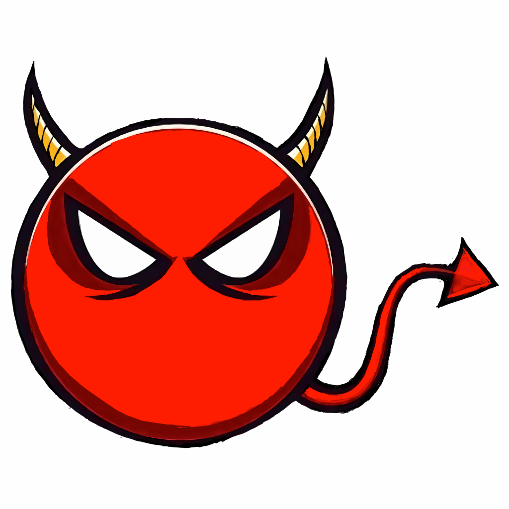
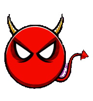
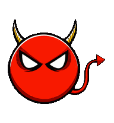
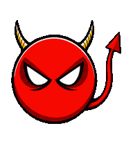
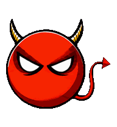
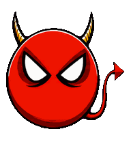
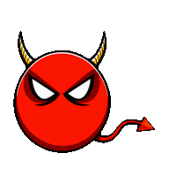
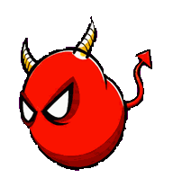
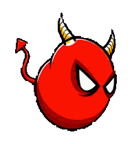
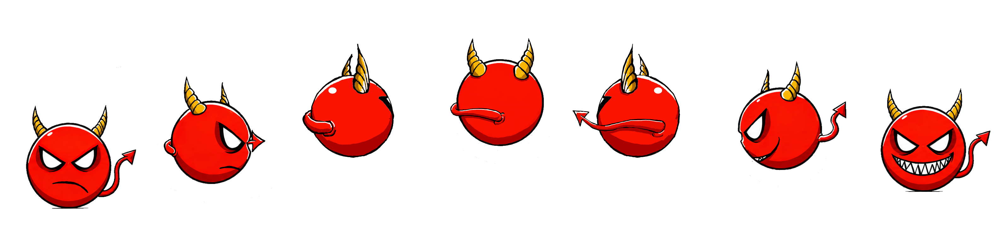

DamienPrimary sprite
Idledefault · tail sway · re-export (fringe)
Waitingawaiting input
Active worktask running
Reviewtoothy grin · done
Faileddeflate · error
Wavegreet · tail wiggle
Run ←move left
Run →move right
Jump · 360° spin7 frames, grumpy takeoff to toothy-grin landing. Use for success or celebrate.